Seit 1934
Unser Haus
Ein Wirtshaus in der ältesten Ecke von Graz — und die Menschen, Lieferanten und Räume, aus denen es besteht.
Hereinspaziert seit 1934
Robert Herzl eröffnete 1934 am Mehlplatz seine Weinstube. Das Haus selbst stammt aus dem 17. Jahrhundert; seine Gewölbe und Stuben sind bis heute der Grund, warum hier so unterschiedlich große Runden Platz finden.
Heute führt Edith Seitinger das Haus, in der Küche steht Marius Sandu.
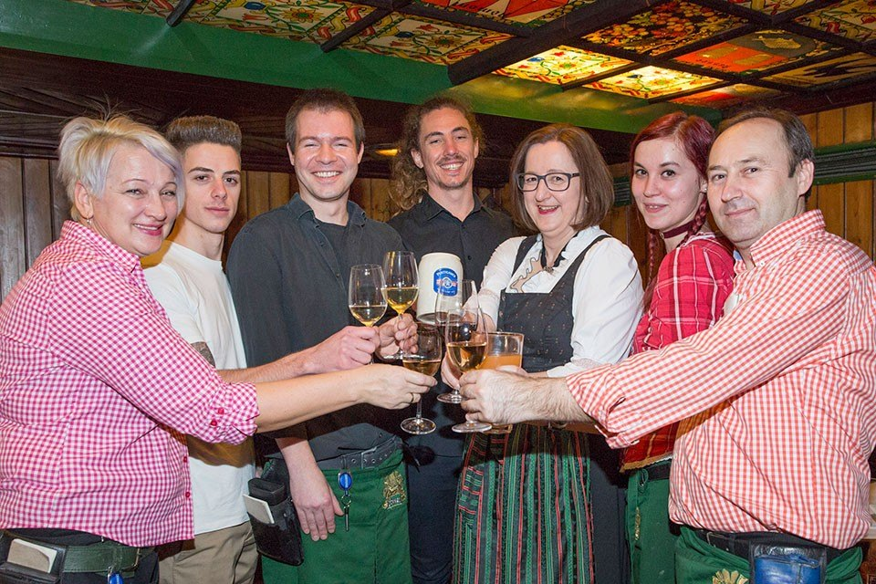
Aus dem Archiv
Was über uns geschrieben wurde
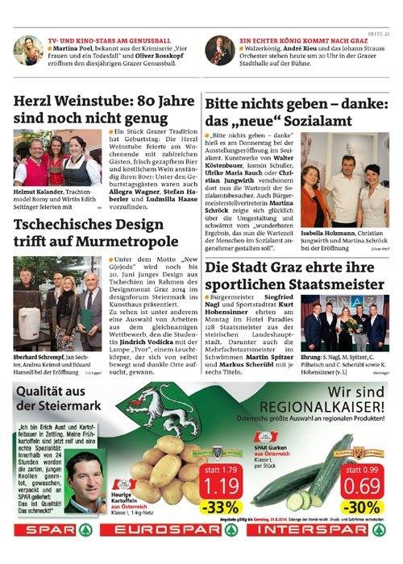
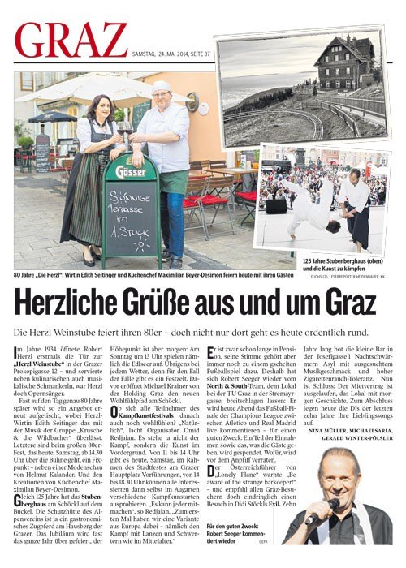
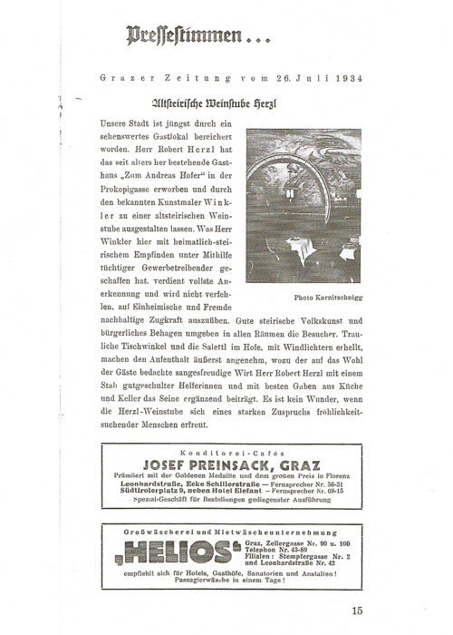
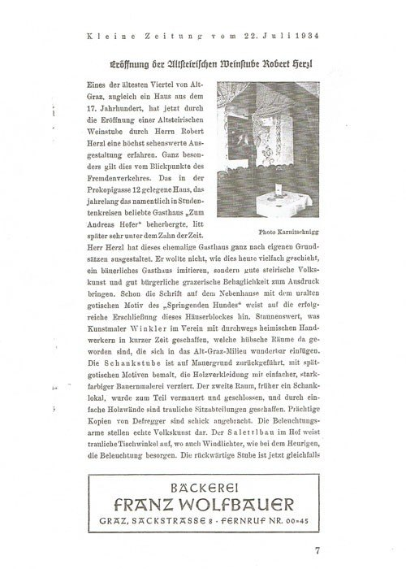
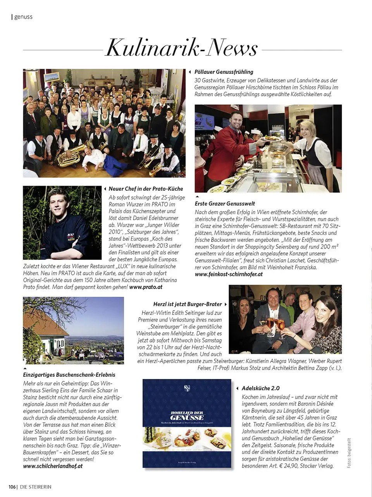
Unser Küchengeheimnis
Woher die Zutaten kommen
Für die frische Zubereitung und den Einsatz regionaler Rohstoffe wurden wir mit dem AMA-Gastrosiegel ausgezeichnet. Das Siegel verlangt, dass auf der Karte steht, woher Fleisch, Milchprodukte, Eier, Obst, Gemüse, Erdäpfel und Wild stammen — und es wird kontrolliert.
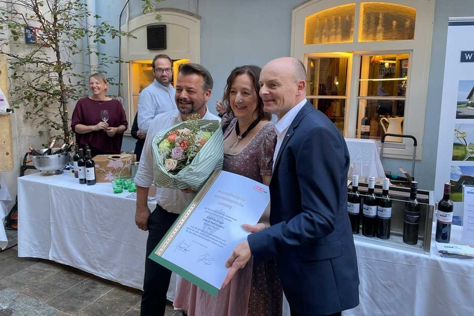
- Backhenderl
- maisgefütterte Bauernhühner von Kicker
- Rind, Kalb und Schwein
- Fleisch aus Österreich
- Schweinefleisch
- Fleischermeister Ehmann, Ligist
- Wurst und Räucherwaren
- Fleischerei Lamprecht
- Wild
- zartes Dammwild vom Wildererhof bei St. Stefan im Rosental
- Bio-Weideganserl
- Familie Meixner bei Pöllau
- Käse
- Christoph Leitner, Tulwitz
- Eier aus Bodenhaltung
- Sulmtaler Frischei, Familie Teissl, Heimschuh
- Erdäpfel, Kraut, Zwiebel, Karotten, Grazer Krauthäuptl
- Friedrich Schlögl, Vasoldsberg
- Milch und Milchprodukte
- aus Österreich mit dem AMA-Gütesiegel
- Edelbrände
- Günther Peer, Leitring
- Wein
- Weißweine aus der Steiermark und Niederösterreich, Rotweine aus dem Burgenland
- Fruchtsäfte
- von den Winzern oder aus Schlögels Obstgärten
Rundherum
Die Altstadt vor der Tür
Der Mehlplatz liegt mitten im UNESCO-Weltkulturerbe. Vieles, wofür Gäste nach Graz kommen, ist von hier aus zu Fuß erreichbar.
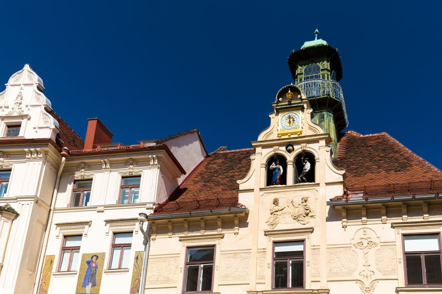
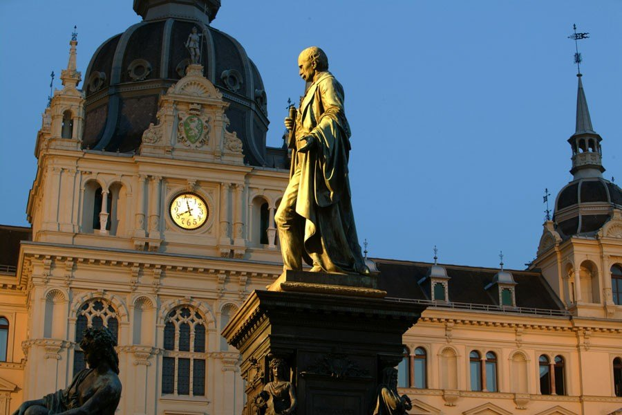

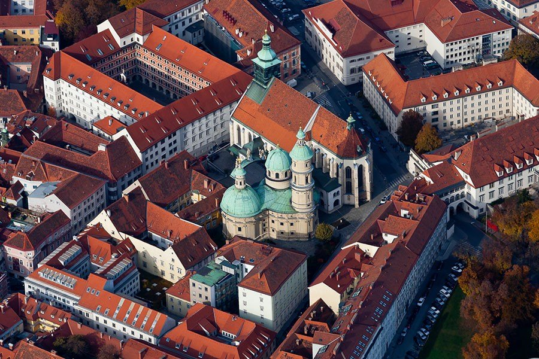
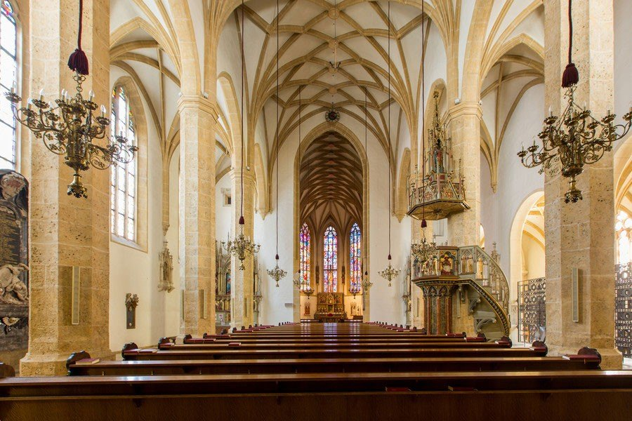